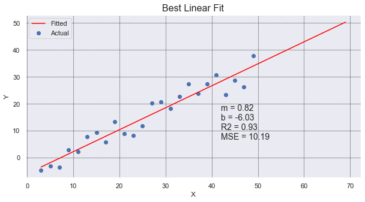
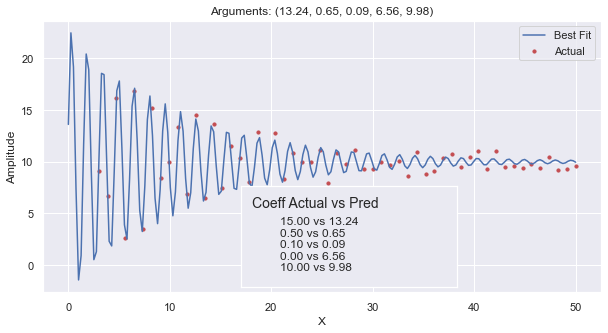

Curve of Best Fit#
In this section, we will show how you can identify a Curve of Best Fit for a set of data points. The curve can be anything an equation can express, but there are some limitations with discontinuous curves and asymptotes. The easiest is finding a line of best fit. Secondarily, you can find the polynomial that fits the data points. Tertiary, you can provide an equation of a continuous curve involving a combination of functions such as sine or logarithm. Lastly, you can have a non-continuous curve like Sigmoid or `y = 1 / (x - 3).
We will review four different ways to get the equation of a fitted curve.
scipy.stats.linregress: a statistical method that identifies a line’s coefficients as well some statistical information.numpy.polyfit: a Numpy method that identifies the coefficients of any n-ordered polynomial.scipy.stats.curve_fit: a statistical method that identifies the coefficients of any function as well as some statistical information about the fit.ML LinearRegression:
When identifying a Curve of Best Fit, it is good to know how good the curve is at representing the data points. We want an objective quantification that tells us whether a straight line is better at fitting the points, or some other curved line such as a parabola. We can compare how well two different lines fit using the Mean Squared Error.
Often we want to know how much of a correlation there is between the x & y data points. Afterall,
we may have just asked Seaborn to plot a regression line and the line presented is the best line that fits the
data, but is the data linearly related at all? This is a different, but also important question! This is
answered by looking at the Coefficient of Determination.
\(R^2\) or Coefficient of Determination
R-squared (\(R^2\)) is a statistical measure that provides an indication of how well the line of best fit (the regression line) fits the data points. It quantifies the proportion of the variance in the dependent variable (y) that can be explained by the independent variable (x) in a linear regression model.
The R-squared value ranges from 0 to 1. A value of 1 indicates that the regression line perfectly predicts the dependent variable, meaning all the data points lie exactly on the line. A value of 0 indicates that the regression line does not explain any of the variance in the dependent variable, and the points are scattered randomly.
In general, a higher R-squared value indicates a better fit of the line to the data. For example, an R-squared value of 0.8 means that 80% of the variability in the dependent variable is accounted for by the independent variable(s) in the model.
Here is a table that shows some of the most frequent API we used in this section.
API |
Notes |
|---|---|
This does a simple line plot on the current axis. It does not offer ‘ax=ax’ argument. |
|
This does a simple scatter plot on the current axis. It does not offer ‘ax=ax’ argument. |
|
This creates a numpy array of values linearly spaced between [start, end] with a specific number of points. It is helpful in generating |
|
This identifies the coefficients of any n-ordered polynomial. |
|
a statistical method that identifies a line’s coefficients as well some statistical information. |
|
A statistical method that identifies the coefficients of any function as well as some statistical information about the fit. |
|
Calculates the Mean Squared Error (MSE) from two sets of y_data points. |
code imports
import random
import numpy as np
import pandas as pd
import matplotlib.pyplot as plt
import seaborn as sns
from scipy.optimize import curve_fit
from scipy.stats import linregress
from scipy import stats
from sklearn.metrics import mean_squared_error
sns.set()
# This if for Jupyter Notebook only
%matplotlib inline
Seaborn Regression#
In many research projects, it is beneficial to find a curved line that best fits the data.
Students will often do a scatter plot of the data points and have Seaborn do a regression plot
which shows a line of best fit with a shaded area around the line representing
a 95% confidence interval. None of that is horrible. It is convenient to have a line of best fit,
if there is one. And, regplot will draw one for you by default.

true_slope = 3/4
true_intercept = -4
x_data = [ x for x in range(3, 50, 2) ]
y_data = [ x*true_slope + random.randint(-5, 5) + true_intercept for x in x_data]
# Use the grid in the plot and set the line style to black & dashed
plt.grid(True, linestyle='--', linewidth=0.5, color='black')
sns.regplot(x=x_data, y=y_data)
This is about as simple as it gets. We generated x_data with a simple comprehension. We could
have also used np.linspace(). We similarly created the y_data and added some noise with
random.randint(-5, 5). By default, regplot will add a regression line and a confidence
interval. The confidence interval is 95% and students often misunderstand what it means.
It does NOT mean that there is a 95% confidence that the points in the scatter plot will fall within the shaded interval. Clearly, that is not the case!
It means, insteatd, that there is a 95% confidence that the average of the scatter plot data falls within that range.
I know what you’re thinking: the average of the data is clear and concrete–there is no need to estimate it.
That is true. The average is easy to
calculate with a finite set of points that are the true population data.
regplot estimates what the true population might look like assuming that your data is just a sample. It then calculates
the confidence interval based on the assumption that the errors (residuals) in the regression model
follow a normal distribution. It is 95% sure that the true average falls in that range.
Note that in your research, you may want to extend the curve of best fit out further. You can see how to do this in the next plot below.
Here are some helpful links:
Seaborn Tutorial
Seaborn regplot API
Lastly
It is common to hide the shaded confidence interval by setting the named parameter, ci to None, as follows:
sns.regplot(x_data, y_data, ci=None)
SciPy Linregress#
This plot shows a scatter plot of data drawn with plt.scatter. It then finds the line of best fit using
linregress. It plots it out, extending an extra 20 values on the x-axis, and it provides data on the
graph itself. It shows what the slope and y-intercept are (m & b), gives the \(R^2\) value, and lastly
it presents the Mean Squared Error.

# use the same x_data & y_data in example above.
# To find details about the line, we need to use linregress.
slope, intercept, r_value, p_value, std_err = linregress(x_data, y_data)
# generate 100 x_fit points and go out 20 past x_data limits to show "prediction"
x_fit = np.linspace(min(x_data), max(x_data)+20, 100)
y_fit = intercept + slope * x_fit
# create a 'vector' (list of values) for the line of best fit.
# We use the scalar values (1 value) from linregress and the original x_data points.
# We need the same number of y values as are in y_data.
y_predicted = intercept + slope * np.array(x_data)
# Calculate the MSE
mse = mean_squared_error(y_data, y_predicted)
# plot our data points with line of best fit with info on the graph
plt.figure(figsize=(10, 5))
plt.scatter(x_data, y_data, label='Actual')
plt.plot(x_fit, y_fit, color='red', label='Fitted')
plt.grid(True, linestyle='--', linewidth=0.5, color='black')
plt.legend()
plt.title('Best Linear Fit', fontsize=16)
plt.xlabel('X')
plt.ylabel('Y')
plt.text(42, 20, f'm = {slope:.2f}\nb = {intercept:.2f}\nR2 = {r_value**2:.2f}\nMSE = {mse:.2f}',
ha='left', va='top', fontsize=14)
The nice thing about using linregress is that it will provide multiple pieces of information
for us in one simple call. It gives use the slope and intercept values, along with the r_value that
we can square to get the Coefficient of Determination.
Interestingly, linregress returns an object, not a list of values. However, because the linrgress object
returns implements the special method __iter__, the object can be unpacked into a set of values. This gives
some flexibility in how the caller wants to receive the values. The caller can keep the object and dereference
the object, or the specific values can be immediately unpacked upon receipt. Cool!
Example call:
line_info = linregress(x_data, y_data)
print(f'R2={line_info.r_value**2:.2f}')
Numpy Polyfit#
Here we use np.polyfit to find the best fit for a line and a parabola. Put another way,
the coefficients of a polynomial of degree 1 and 2.
The graph shows many things: scatter plot of data, line of best fit, parabola of best fit,
a legend, coefficients of the parabola of best fit, and MSE of both the parabola and line. Whew!
It shows that the parabola is a much better fit for the points.

def add_inset_text(fig, position, actual, coeffs):
# print values in an inset positioned in figure percentages [x, y, width, height]
ax_inset = fig.add_axes(position)
ax_inset.set_xlabel('')
ax_inset.set_ylabel('')
ax_inset.set_xticks([])
ax_inset.set_yticks([])
ax_inset.grid(False)
text = 'Coeff Actual vs Pred'
ax_inset.text(0.05, 0.90, text, ha='left', va='top', fontsize=14)
text = ''
for a, c in zip(actual, coeffs):
text += f'{a:.2f} vs {c:.2f}\n'
ax_inset.text(0.18, .70, text, ha='left', va='top', fontsize=12)
return ax_inset
def best_parabola_fit():
def parabola(x, a, b, c):
y = a*x**2 + b*x + c
return y
def generate_points(a, b, c, noise):
x_data = [ x for x in range(3, 50, 2) ]
y_data = [ parabola(x, a, b, c) + random.randint(-noise, noise) for x in x_data]
return x_data, y_data
# establish our True parabola coefficients
actual = (0.45, 2.5, -7)
noise = 150
x_data, y_data = generate_points(*actual, noise)
# plot it all
fig, ax = plt.subplots(figsize=(10,5))
# Use the grid in the plot and set the line style to black & dashed
plt.grid(True, linestyle='--', linewidth=0.5, color='black')
# Eliminate the confidence interval shading of the parapola and color the line red
sns.regplot(x=x_data, y=y_data, ax=ax, order=2, ci=None, line_kws={'color':'red'})
# Determine if a linear line is a better fit using MSE
# find the coefficients of the parbola that best fits the points generated
# The coefficients are ordered from high order to lower order
coeffs_2 = np.polyfit(x_data, y_data, 2)
y_predicted_2 = [ coeffs_2[0]*x**2 + coeffs_2[1]*x + coeffs_2[2] for x in x_data]
mse_degree_2 = mean_squared_error(y_data, y_predicted_2)
# get coefficients for the line
coeffs_1 = np.polyfit(x_data, y_data, 1)
# Use vector math instead of a comprehension this time (because we can)
y_predicted_1 = coeffs_1[1] + coeffs_1[0] * np.array(x_data)
mse_degree_1 = mean_squared_error(y_data, y_predicted_1)
print('MSE Degree2:', mse_degree_2, ' MSE Degree1:', mse_degree_1)
# add MSE to our inset text box
ax_inset = add_inset_text(fig, [0.15, 0.50, 0.35, 0.28], actual, coeffs_2)
ax_inset.text(0.6, 0.90, 'MSE:', ha='left', va='top', fontsize=14)
text = f'Line:{mse_degree_1:.0f}\nPara:{mse_degree_2:.0f}'
ax_inset.text(0.65, .70, text, ha='left', va='top', fontsize=12)
# since plt.plot() does not offer ax=ax argument, and without it we plot on the inset,
# use ax.plot() to get the line to show up on the right axis.
ax.plot(x_data, y_predicted_1, color="green")
ax.set_title('Best Parabola & Line Fit', fontsize=16)
# Need to set the legend on the axis to get things to show up correctly,
# even when setting label=''values' during plots, we need to set the label strings here.
ax.legend(['Parabola Fit', 'Line Fit', 'Actual'], loc='lower right')
In this code we use sns.regplot with order=2 to draw a portion of a parabola (in red) that best
fits our set of points (in blue). The order, value 2, tell Seaborn the highest exponent in the polynomial.
A value of 2 means a parabola. The default value of 1 is a line. We also set ci=None to avoid drawing
any shaded area around the line.
Seaborn will draw the line but it doesn’t give us the equation of the line. It also fails to give us
any value that tells us how well the line fits our set of points. To identify the coefficients for
both the line and polynomial, we use np.polyfit and pass in the original data points with the order
of polynomial to use.
Mean Squared Error (MSE) is defined to be the sum of all squared residuals (different between the line and
the data point). The implementation is quite simple:
mse = sum([ (y1 - y2)**2 for y1, y2 in zip(y_points, y_line)])
In this sample code, we use “vector” math to calculate the y values for the line (or predicted curve).
y_predicted_1 = coeffs_1[1] + coeffs_1[0] * np.array(x_data)
Numpy arrays are “vectors” and allow us to multiply them by a “scalar” (a constant, non-array). The above code will result
in a “vector” (numpy array of values) without having to do a for-loop or comprehension. You cannot do
this with a regular list; it requires a numpy array. Convention often has us representing a vector of
values with a capital letter which can sometimes be confused with a constant. Here would be another
conventional way to do vector math.
X = np.array(list_of_x_values)
Y = 3 * X + 4
Lastly, we make use of an inset to annotate some text to the graph so the reader can see how much better the curve is over the line. MSE values are relative and the values depend on the scale of the numbers. MSE values are most valuable when compared against another MSE value. In this case we can see how the parabola’s MSE value is close to half the value of the line’s MSE.
Curve Fit#
Here we see how we can find a curve of best fit to a custom, continuous curve: a logarithmically degrading, sinusoidal wave.
This is a continuous curve with no x-value that causes a division by zero. This allows us to use the curve_fit API. It will
highly unlikely that you’ll ever want to fit a set of points to a curve like this. In the event that you ever encounter
wave data, you’ll more likely want to leverage Fourier Transforms. The
reason we use a sinusoidal wave is simply to illustrate how curve_fit can be used on any curve.
To fit a line to a curve:
Identify an equation that you want to fit. You’ll create a method that has the generalized equation with coefficients that are unknown. For example, a line is:
y = mx + bwhere curve_fit will identify the values formandb. You may have a polynomial curve such as:y = a*x**4 + b*x**3 + c*x**2 + d*x + eand curve_fit will find the values forathroughe. If you know want to fix one of the values, you can use a constant to the known value. Write a method that takesxalong with the coefficients are arguments. For example:
def my_function(x, a, b, c):
return a*x**2 + b*x + c
Select a set of values for the coefficients that represents a valid guess. Assign these coefficients to a list, often named,
p0. You’ll providep0as an argument tocurve_fitto help it get started as well as to understand how many coefficients to solve for.You’ll call
curve_fitwith the following arguments: methoid pointer, set of points you want to fit, along with the initial guess. For example:
# curve_fit returns a tuple. The first item is a list of coefficients. The second
# is statistical information about the coefficients. In this example we ignore
# the covariance values, and so we unpack them into the identifier '_' which is a conventional
# name for a variable that goes ignored and unused.
coeffs, _ = curve_fit(logarithmic_sinusoidal_wave, x_data, y_data, p0=p0)
In our custom curve, we have coefficients for each of the following: amplitude, frequency, rate of logarithmic degredation, phase and offset.
The top plot has “zero arguments” provided in the method logarithmic_sinusoidal_wave which means that
it uses all the default values (10, 1, 0.2, 0, 0). This is why the title of the top plot is: “Arguments: ()”.
The bottom plot is the same equation but with specific coefficients provided (15, 0.5, 0.1, 0, 10). It
shows how the coefficients impact the curve. Pay attention to the values on the y-axis.

See Code
def logarithmic_sinusoidal_wave(x, a=10, frequency=1, r=0.2, phase=0, offset=0):
# Logarithmic convergence of amplitude
amplitude = a * np.exp(-r * x)
return offset + amplitude * np.sin(2 * np.pi * frequency * x + phase)
def plot_with_args(ax, x_max, *args):
# Generate x values
x = np.linspace(0, x_max, 200)
# Compute y values (plural)
y = logarithmic_sinusoidal_wave(x, *args)
# Plot on the axis & show labels
ax.plot(x, y)
ax.set_xlabel('X')
ax.set_ylabel('Amplitude')
ax.set_title(f'Arguments: {args}')
def show_sinusoidal_curve():
fig, (ax1, ax2) = plt.subplots(2, figsize=(10, 9))
# add some more spacing horizontally between the two subplots
plt.subplots_adjust(hspace=0.3)
plot_with_args(ax1, 20)
wave_args = (15, 0.5, 0.1, 0, 10)
plot_with_args(ax2, 20, *wave_args)
plt.suptitle('Logarithmic Sinusoidal Waves', fontsize=18)
This plot shows the generated data points (that have noise) as small red dots. These data points were derived by adding a noise (\(\pm 1\)) to the sinusoidal equation using the argments (15, 0.5, 0.1, 0, 10).
The blue line is the best fit curve that fits the logarithmic_sinusoidal_wave (provided
in the code of the Sinusoidal tab.)
The inset shows how the actual arguments used when generating the points with noise, and it compares
them against the coefficients for the curve of best fit. Here you can see that it slightly underestimated
the amplitidue. It was 0.15 off of the frequency, only 0.01 way from the rate of degradation, and only
0.02 away from the offset. The phase was 6.56 off of the actual phase used.

def find_curve_best_fit():
def generate_points(noise, *args):
'''
*args : allow us to call the function with any number of arguments so long as they are in order.
we would just default the rest of the argument values.
'''
x_data = np.linspace(3, 50, 55)
y_data = [ logarithmic_sinusoidal_wave(x, *args) + random.uniform(-noise, noise) for x in x_data]
return x_data, y_data
# establish our True curve parameters and generate points
wave_args = (15, 0.5, 0.1, 0, 10)
x_data, y_data = generate_points(1, *wave_args)
# get our initial guess as to what the coefficients will be.
# the count of arguments here tells curve_fit how many arguments to optimize.
p0 = (15, 1, .5, 0, 0)
# find our curve of best fit from the line, and round off the coefficient values
coeffs, _ = curve_fit(logarithmic_sinusoidal_wave, x_data, y_data, p0=p0)
coeffs = tuple([ round(t, 2) for t in coeffs ])
# Plot all of it
fig, ax = plt.subplots(1, figsize=(10, 5))
ax.scatter(x_data, y_data, s=10, color='r')
plot_with_args(ax, 50, *coeffs)
ax.legend(['Best Fit', 'Actual'])
pos = [ .4, .14, .3, .28 ]
add_inset_text(fig, pos, wave_args, coeffs)
The code for the sinusoidal curve equation is provided in the ‘See Code’ dropdown in the
‘Sinusoidal’ tab. In this method we chose to have all the coefficients be named arguments with
default values. This allows us to to easily modify our code to hold some values constant and
allow curve_fit to solve for the others. If we had chosen to make p0 have only two values
in it, then curve_fit would have solved for amplitude & frequency while holding r, phase
and offset constant.
In this plot, we first generated our set of points to which we will fit the sinusoidal curve. These points are intended to be ‘actual’ data points in our hypothetical experiment that will have some noise. We generate the points by calling our sinusoidal method will all the coefficients and then add some random values intended to be “noise” or imperfections in the data.
We chose to pass around the many coefficient to generate_points and logarithmic_sinusoidal_wave by
using a tuple of values. wave_args is a tuple with all the “true” coefficients used in the
hypothetical experiement. The use of tuple shortens the code and makes it easier to read, so
long as you understand what is going on. We unpack the values when we call generate_points which
collects and repacks them into the tuple named ‘args’. In turn, it can easily call the sinusoidal method
with the tuple. Altogether, this allows us to generate points and solve for coefficients using as many or
as few arguments as we want, using default values for the rest.
Confusing? See Arguments for more information.
When generating our data points, we make use of linspace which is a nifty method that allows us
to quickly set a minimum, maximum, and an arbitrary number of points. It generates values
evenly spaced in that range.
curve_fit does a lot of work for us, making use of calculus and statistics to find the coefficients
to the equation we established. Each coefficient represents one dimension, and our equation
represents values in an n-dimensional space. It then uses a method similar to “Gradient Descent”
to find values that minimize the Mean Squared Error for our coefficients and the set of actual points.
Confusing? See the video, Gradient descent, how nerual networks learn, by 3Blue1Brown, to get a great visual on Gradient Descent. This video is tailored to neural networks, but the idea is the same. Gradient Descent is a mathematical method for optimizing in n-dimensional space.
Note that in ax.scatter we provided the x & y data as lists and set some named arguments.
It can be frustrating that plotting methods often have named arguments with different names.
When we call scatter on the axis object, we set s to change the size of the markers (or dots).
To add more value to the graph, we create an inset with text on the graph.
ML regressions#
The study on distance using Machine Learning models is done on another page.
See ML Study